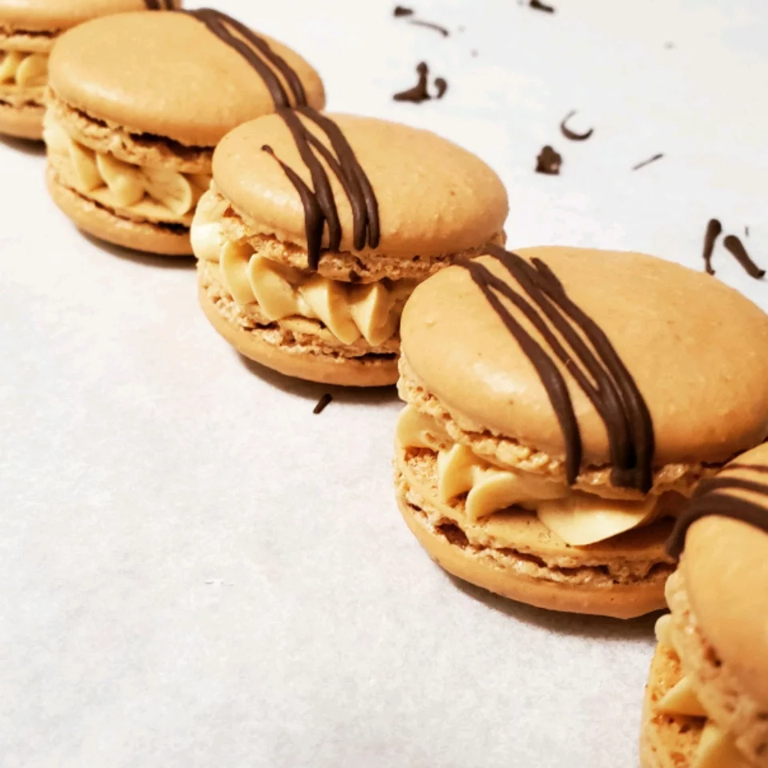

Description
These cookies are a labor of love and we did a lot of research to perfect this recipe for you, after our own
failures. Please follow as written and you will have a delicious and well-presented cookie. You may wish to
experiment with different fillings. Enjoy!
Ingredients
Macarons:
- 3 extra-large egg whites
- ⅓ cup white sugar
- 1⅔ cups confectioners' sugar
- 1 cup almond flour
- 1 pinch salt
Buttercream Filling:
- ½ cup butter, softened
- ⅔ cup confectioners' sugar
- ½ teaspoon vanilla extract
Steps
- Preheat oven to 300 degrees F (150 degrees C). Line a baking sheet with parchment paper.
- Beat egg whites in a glass, metal, or ceramic bowl with an electric mixer on medium speed until foamy, about
30 seconds. Add white sugar and continue to beat until peaks are stiff enough they stay in place when the
bowl is turned upside down, about 5 minutes.
- Sift 1 2/3 cup confectioners' sugar, almond flour, and salt together twice. Fold into the egg whites until
batter is creamy and falls slowly off the lifted spatula, about 50 turns with a spatula. Transfer batter to
a piping bag fitted with a round tip.
- Pipe batter onto the parchment paper, using a circular motion to make macarons 1 inch in diameter. Tap the
baking sheet against the counter about 10 times to release any air bubbles.
- Bake in the preheated oven for 9 minutes. Rotate baking sheet and continue baking until macarons are shiny
and rise slightly to form "feet", about 9 minutes more. Peel off the parchment paper and allow to cool
completely, about 30 minutes.
- Beat butter, 2/3 cup confectioners' sugar, and vanilla extract with an electric mixer until creamy and
thick, about 10 minutes. Transfer filling to a piping bag fitted with a round tip.
- Pipe a small amount of filling onto the center of 1 macaron; top with another macaron and press gently to
sandwich the filling between the two.
Back to recipe index